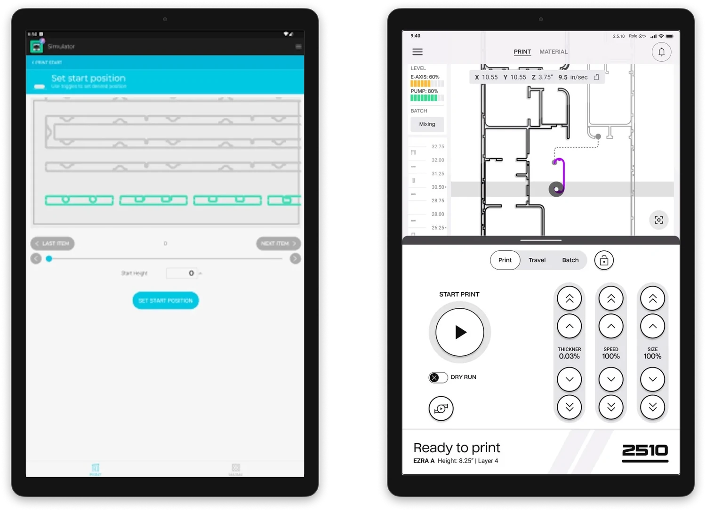
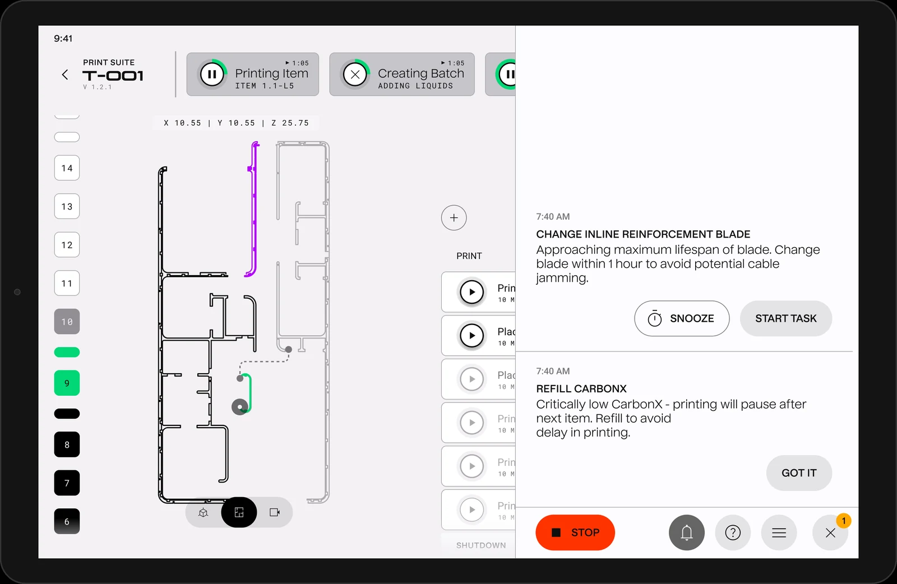

Making large scale construction robots operable by anyone
When I joined, ICON's building-scale 3D-printing robot couldn't be run without multiple operators and several support engineers on site. The expertise to run a print lived primarily in people's heads and written SOPs, requiring long onboarding cycle times. The operator interface was also struggling to keep up with fast-evolving hardware: clunky, hard to navigate.
With developers making UX decisions without design support, the interface was nearly unusable in real field conditions. I led the redesign of the operator experience across multiple hardware generations, turning expert-only operation into an intuitive and guided, task-based system.

Ran deep field research
I watched operators work in real conditions to find where visibility, contrast, gloves, and cognitive load actually broke the experience, rather than designing from a comfortable desk.
Rebuilt the interface for the jobsite
High-contrast visuals, larger hit targets, simplified navigation, and a large-format variant of the design system, built for glare and gloves instead of an office monitor.

Redesign to Block 4 GenerationDesigned a guided, task-based operation system
I partnered with engineering to turn an early concept, automated task-graph traversal of a building design, into a human-operable flow that walks operators step by step instead of relying on memory. An AI-to-human translation layer.
 Titan Generation
Titan Generation
Closed costly gaps
I developed a prompting and alert system to convert important but easy-to-miss tasks, such as cleaning steps and material-refill needs that could each cost 30-plus minutes of delay, into clear and obvious actions, reducing risk to continuous operations.

Prompts & alertsGave greater performance visibility
The first real-time view for project and construction managers into what's happening in the field, with near real-time productivity and performance metrics they'd never had before, reducing reliance on other tracking software and manual processes.
 Monitoring
Monitoring
Designed for what's next
Automation and operator-as-monitor models, plus early concepts for remote access and voice operation, laying the groundwork for one person running more than one machine remotely.

Operable by small staff, with fast onboarding times
During my tenure, the guided system shipped roughly 60% of the full build sequence as guided tasks, built to bring operators to independence in weeks instead of months, and the most recent project onboarded operators within 3 weeks of deployment. Managers got their first real-time field visibility, and the system laid the foundation for external customer deployment.